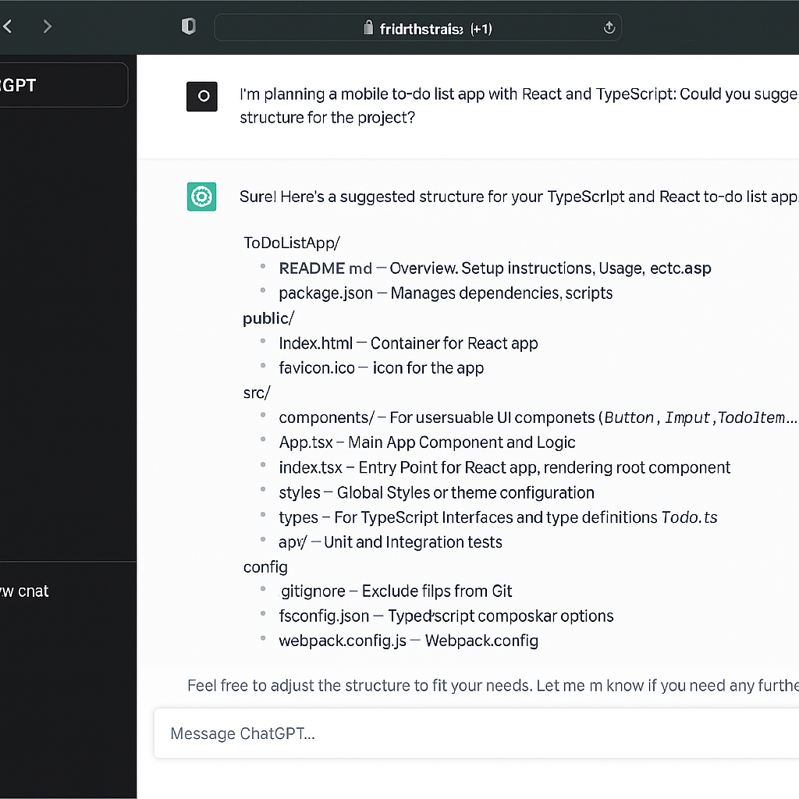

Analysis: Using AI in Software Development
Guidelines
Integrating AI into the development process is no longer a trend—it's increasingly becoming the norm. From generating code snippets to testing and debugging assistance, AI tools can save time and inspire creativity. However, they require careful handling to ensure code quality and ethical standards.
Popular tools include GitHub Copilot, ChatGPT, TabNine, and AI-enhanced IDEs like Replit or Cursor. These tools can assist with routine tasks, but should never replace your own understanding of the codebase.
Tips:
- Use AI to support—not replace—your thinking.
- Verify and test all generated code manually.
- Don’t include blind copy-pastes—understand and adapt suggestions.
- Always credit AI use when relevant in documentation or commits.
How developers use AI tools – OpenAI Blog
Human-Centered Evaluation of AI Pair Programmers – academic perspective
How to Use AI Effectively
To benefit from AI without falling into common pitfalls, you should integrate it consciously into your workflow. This means treating it like a junior assistant: helpful, but not infallible. Ask it to explain, not just generate.
In team settings, clearly mark AI-generated code in comments or commits (e.g. `// generated with ChatGPT - reviewed on 2025-07-21`). During reviews or submissions, note where AI helped in solving tasks or generating designs, and always clean up unnecessary or verbose output.
Remember: The quality of an AI tool's answer depends heavily on your prompt. Be specific, structured, and iterative.
(Some) Strengths and pitfalls
AI Tools
Example: ChatGPT-assisted app planning, 2025
- Accelerates routine tasks (e.g. API stubs, unit tests, documentation)
- Boosts creativity and alternative solutions
- Great for explaining complex concepts or unfamiliar frameworks
- Can introduce subtle bugs or poor practices if used blindly
- May hallucinate or suggest insecure/obsolete patterns
- Overreliance can limit skill growth and debugging ability
Document how and where you used AI-based tools in your development process. Provide a critical reflection on their benefits and risks in iteration-3/analysis in the GitHub master branch.